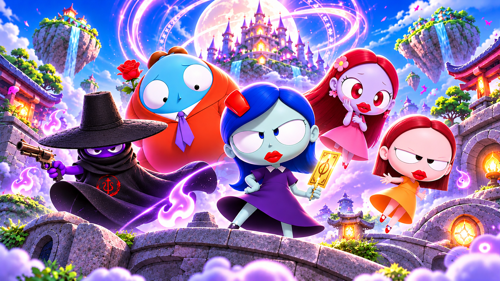
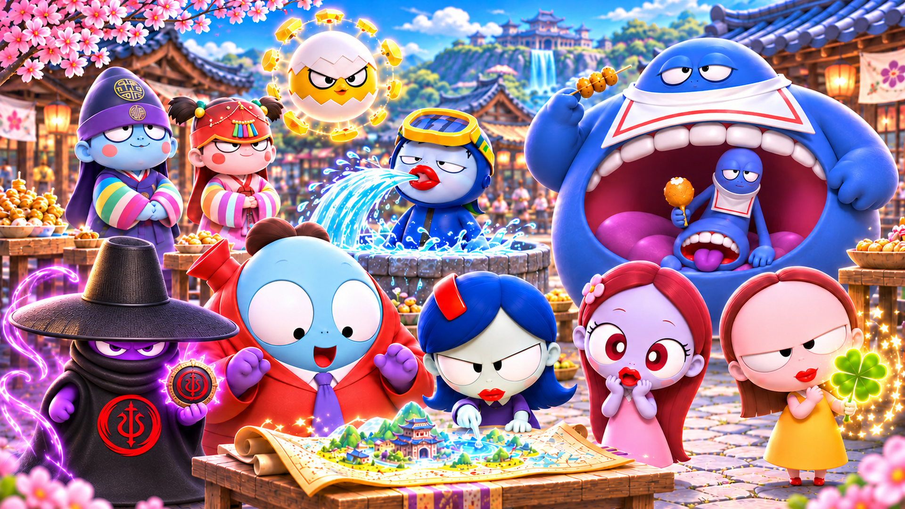
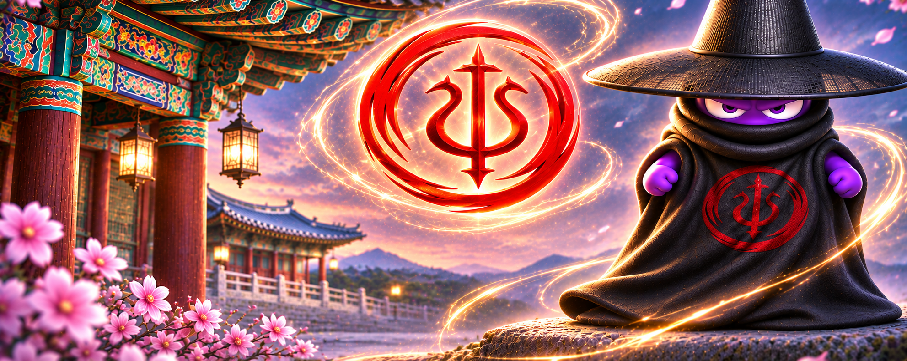
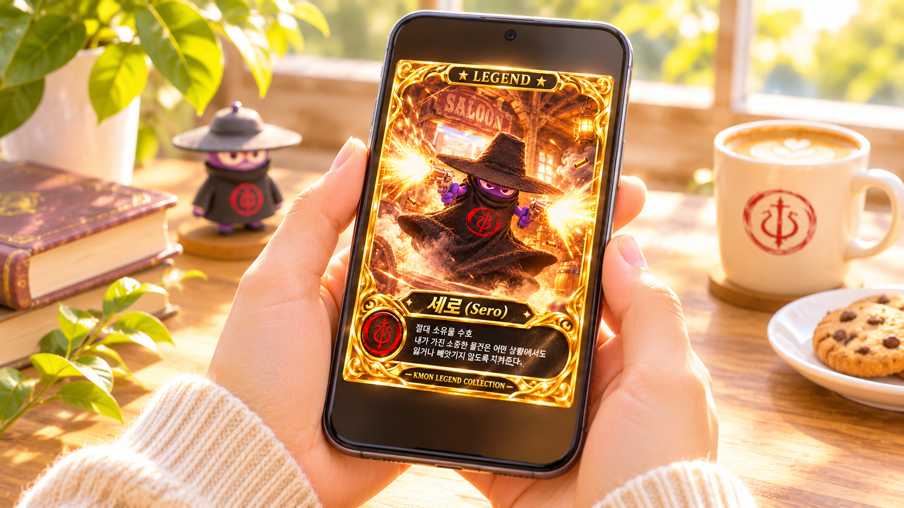
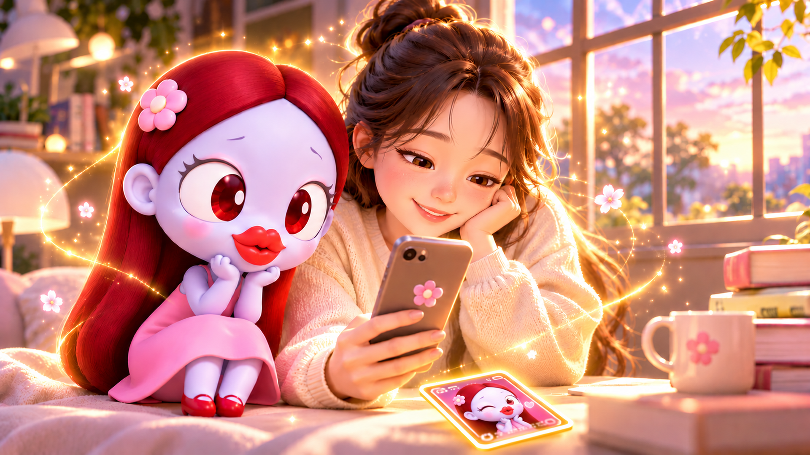
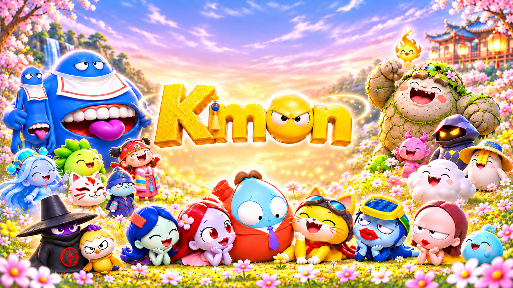

Kmon의 세계
당신의 일상에 특별한 의미가 되어줄 존재

Q. Kmon은 어떤 세계인가요?
Kmon은 저마다 특별한 능력과 개성을 지닌 몬스터들이 살아가는 세계입니다.
우리는 이 특별한 존재들이 단순히 이야기 속 캐릭터로 머무는 것이 아니라, 사람들의 일상에도 작은 즐거움과 특별한 의미를 전해줄 수 있기를 바랐습니다. 그렇게 Kmon의 세계가 시작되었습니다.

Q. Kmon 캐릭터들은 어떤 특별함을 가지고 있나요?
Kmon의 모든 캐릭터는 각자 고유한 능력을 가지고 있습니다.
어떤 캐릭터는 용기를, 어떤 캐릭터는 행운을, 또 어떤 캐릭터는 특별한 상황에 필요한 힘을 상징합니다. 캐릭터마다 성격도 능력도 다르기에 저마다의 이야기를 가지고 있습니다.

Q. 캐릭터마다 고유한 심볼이 있는 이유는 무엇인가요?
각 캐릭터의 능력과 의미를 담아내기 위해서입니다.
Kmon의 고유 심볼은 단순한 장식이나 문양이 아닙니다. 예로부터 수호와 소망, 특별한 힘에 대한 염원을 담아 전해 내려온 한국의 전통 상징을 바탕으로, 현대적인 감각으로 재해석한 고유한 표식입니다.
각 캐릭터가 지닌 특별한 능력을 상징하며, 캐릭터와 사람을 이어주는 매개체이기도 합니다.

Q. Kmon 카드를 소유한다는 것은 어떤 의미인가요?
Kmon 카드는 캐릭터의 모습과 고유 심볼을 간직하는 특별한 카드입니다.
그저 예쁜 그림을 소장하는 것을 넘어, 자신이 좋아하는 캐릭터의 심볼과 그 안에 담긴 특별한 의미를 늘 곁에 두는 것입니다.

Q. 카드에 담긴 캐릭터의 능력이 나에게도 이어질 수 있을까요?
우리는 어렸을 때부터 아끼던 인형이나 소중한 물건을 곁에 두는 것만으로 마음이 편안해지고 든든해지는 경험을 하곤 합니다.
Kmon 카드도 그런 존재가 되기를 바랍니다. 캐릭터의 고유 심볼을 간직하고, 필요할 때 그 의미를 떠올리며 용기와 자신감을 얻고, 때로는 마음의 안정을 느낄 수 있는 존재 말입니다.
Kmon의 특별한 능력은 카드와 함께하는 사람의 일상 속에서 저마다의 의미로 이어집니다.

Q. 나에게 어울리는 Kmon은 누구일까요?
마음에 드는 캐릭터를 만나보세요.
첫눈에 끌리는 캐릭터일 수도 있고, 지금 나에게 필요한 의미를 지닌 캐릭터일 수도 있습니다.
어떤 Kmon을 선택하든, 그 카드가 당신의 일상에 오래도록 간직하고 싶은 특별한 존재가 되기를 바랍니다.